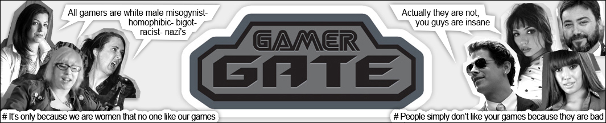
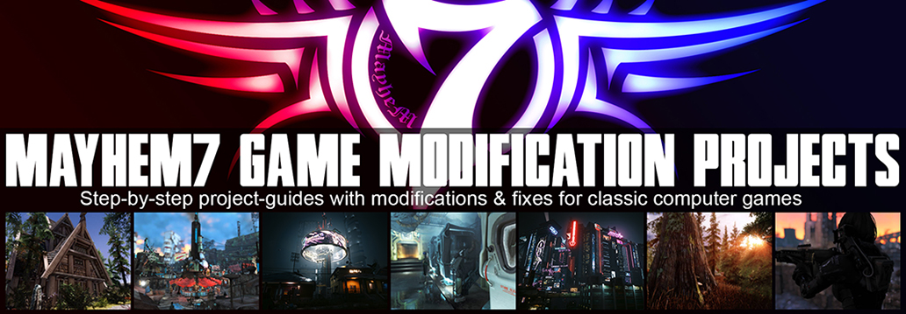

#GamerGate
Integrity in the gaming industry and media
The movement against woke hypocrisy, lies, feminist hate, victim-hood mentality, corruption and political correctness
Hollywood and the dinosaur-media has been infested with woke lies and hypocrisy for years, and the result clearly show. Both have seen a dramatic drop in quality and credibility, to the point where most people have given up on the cinema, and less than 20% trust the news-media. The woke mob also tried infesting the gaming industry with their lies, but this lead to a massive backlash under the name of #GamerGate.
GamerGate support stickers:
HISTORY OF GAMERGATE
What
is GamerGate and how did it come about
In 2014 a couple of gamers noticed that
Depression Quest, a text-based game, got overwhelmingly good reviews
at Kotaku. This was strange, as the game
was no more than an interactive novel, and it
didn't get one single good review/comment from gamers (non-critics). So why did the media even notice this game?
Well, it was discovered that the developer,
Zoë Quinn,
had been sleeping with the game journalist who was reviewing the game. (LINK) This of
course raised legitimate concerns about the integrity of Kotaku, and people
started looking into more questionable reviews in the gaming
press.
As more people began researching, more and more strange reviews and articles
were found, and people started calling it out. The media fought back by
calling all gamers misogynists, bigots, racists, Nazi's. All the usual slurs
that today have lost all meaning. Inappropriate and uncalled for, so more gamers joined the
"debate", and discovered that quite a few media-outlets had been
infested with woke lies. #GamerGate united the gamers who wanted to callout the
corruption and lack of ethics, and they gave the media an overwhelming backlash.
The media responded by pretending to be victims, and started writing
articles to smear and discredit #GamerGate. Zoë Quinn claims
to have received an excessive amount of online harassment and threats at that
time, but has no credible sources or documentation to back up her claims.
Anita Sarkeesian, feminist co-writer of
Feminist Frequency
and host of the short video series
Tropes vs. Women, claimed that she too was harassed and threatened
online. (Also without credible sources or documentation)
Brianna Wu, founder of
Giant Spacekat
and creator of feminist game:
Revolution 60, was very outspoken against GamerGate, and also claimed to
have received online harassment and threats. (Again, without credible sources or
documentation)
The gaming media praised these 3 individuals: Zoë Quinn, Anita Sarkeesian and
Brianna Wu, and told their stories, as if they were super-talented brave women,
fighting against an industry of evil misogynistic, bigoted, racist,
Nazi-white-men. Their stories even spread to regular media, where they were
admired and praised, without anyone ever looking into why these 3 woman got bad
critique for their products. The media only focused on making up a narrative about the 3 strong
independent
women, and their fight against the mob of evil white men. The media claimed that the ONLY reason why Zoë's and Briana's games got bad user-ratings,
were because Zoë and Briana were women. Nothing could of course be further from the truth. Take one
good look at Zoë Quinn's "Depression Quest" or Brianna Wu's "Revolution 60", and
it's crystal clear why they got bad reviews. Both games are
simply terrible, which is the reason why they received bad reviews from gamers, just
like any other terrible game would. It's as simple as that. The gaming-media
gave these horrible games overwhelmingly good reviews, which looks (a lot) like they
were more interested in pushing woke lies, than writing objective and genuine
game-reviews.
Anita Sarkeesian, the woman behind "Tropes vs. Women", which looks like a professional show at first
glance, actually appears presentable, and she is well spoken. But the claims that she makes in her videos
are false and
seemingly random, but she looks professional, and you have to know the content
she is talks about, to see through her. To start off her project, she launched a
donation campaign for the production of her videos. She receives a lot of money
from her feminist audience at Feminist Frequency, and to keep the money coming, she needed to make content that
would fit the feminist narrative. In contrast to Anita's claims, the videos
and examples of games that she shows, are not made by herself. It's just video's she found
online, which she speaks on top of. *Evidence in the videos below. As she doesn't
appear mentally challenged, even though her statements are nothing short of crazy,
it would seem (a
lot) like she is a scam-artist, who keeps doing what she does, as long
as she can fool feminists into throwing money at her.
In 2015, Zoë Quinn and Anita Sarkeesian went
one step further. They literally went to the UN, taking time away from
real issues, to convince the UN to enforce censorship of criticism, and deem
any disagreement with woke feminist ideology "hate-speech". And what's
even more crazy: The UN actually let them speak! Taking time to discuss "mean tweets",
at a time where people faced ethnic cleansing by the "religion of piece".
Absolutely insane. It says a lot about the UN.
Free speech is fine of course, but the UN should prioritize real issues,
of which there are plenty, instead of entertaining complete utter nonsense. See articles:
Anita & Zoë at the UN -
The UN Wants To Censor The Internet To Save Feminists’
Feelings
The UN's report: Cyber Violence against women and girls: (LINK)
Anyone who has ever used social media, or anyone who knows what the internet is,
can easily debunk the entire report. It's absolutely mind-blowing how a
council of people can come up with something this absurd. In my opinion, this is
enough grounds to discontinue the existence of the UN.
..And things get even more bizarre..
Not long after Anita & Zoë's charade at the UN, Candace Owens, better known as Red Pill Black, not knowing anything about GamerGate, launched a kick-starter for a project about anti-bullying. Something that Zoë Quinn and the other "victims" of bad reviews should be excited about. But watch the first 10 minutes of the following video, and be amazed.
The phrase, "we are lifting the masks off trolls", which sounds like, "exposing the identity of online harassers", made Zoë Quinn panic. Now why would Zoë Quinn panic over something that would help her expose all the anonymous white men, that she claims were harassing her? Another good question is how she knows they were all white men, if they ware all anonymous? Anyway, as Candace Owens didn't want to stop her project, even after being threatened by Zoë Quinn, all of a sudden, all these "anonymous white men" started attacking Candace Owens, literally right after she spoke with Zoë on the phone. To Candace Owens, and many others, this would seem (a lot) like Zoë Quinn actually controls all these fake profiles, and uses them to harass people. It would seem (an awful lot) like Zoë Quinn actually never was harassed online, but that she herself was/is the harasser. (More evidence to this fact) It would definitely seem like she had just made the whole thing up so she could play the victim, and use that as the reason why her game got bad reviews, and not her lack of competence. That, and so she could collect donations on her Patreon from gullible woke feminists of course.
This interview with Yuri Bezmenov, a KGB defector, has
nothing to do with GamerGate as such, but it explains perfectly how the world
came to this.
It's recorded in the 1980s, where he warned about what the KGB was actually
doing to the US and other countries. It's a very interesting interview, and it's
highly relevant for understanding current events in the US and EU.
Know your history!
Detailed history of the GamerGate controversy (LINK)
It's important to stand against the woke lies,
so the gaming industry doesn't end up like Hollywood. The best way to do this,
is by boycotting the game-journalists and media that support and push the lies. Callout their lies and fabrications, and don't be afraid of
their harassment and name-calling. There are way more people who are tiered of
their hypocrisy, than people who support them.
People & media who promote woke lies:
Individuas:
Anita Sarkeesian (Feminist Frequency)
(Tropes vs. Women)
Zoë Quinn
(Depression Quest)
(Zoe
Quinn Scandal)
Brianna Wu, (Giant Spacekat)
(Revolution 60)
Leigh Alexander (Gamers
Are Dead)
Jim Sterling (Steam)
(YouTube)
Nathan Grayson (Rock
Paper Shotgun) (Zoe
Quinn Scandal)
Jaina
Rodriguez Grey (Wired)
Media:
Kotaku,
Destructoid,
Gamasutra,
GameInformer, Metro, Rock
Paper Shotgun, Wired
GamerGate Support List:
Individuas:
Mercedes Carrera
Sargon of akkad
Count Dankula
Candace Owens
Milo
Yiannopoulos
Karen Straughan
Syrian
Girl
Paul Joseph Watson
Dr Shaym
Shoe0nHead
NateTalksToYou
Blaire White
Chris Ray Gun
SomeBlackGuy
Roaming Millennial
Black Pigeon
Speaks
Mike Cernovich
Tim Pool
Media:
APGNation,
The Escapist,
Evil Avatar,
Gamesnosh,
Gaming Reinvented,
Gamnesia,
GoodGamers,
NicheGamer,
OK Games,
Original Gamer,
PixelJudge,
RPGamer,
Science Vs. Feminism,
Twentyoz,
Two Dash Stash
